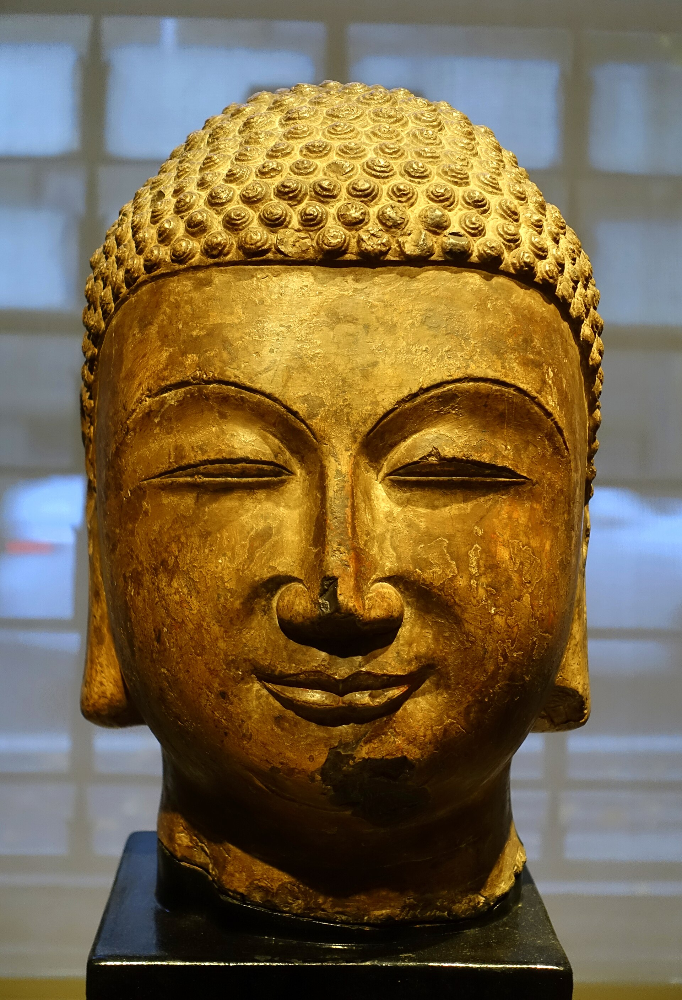
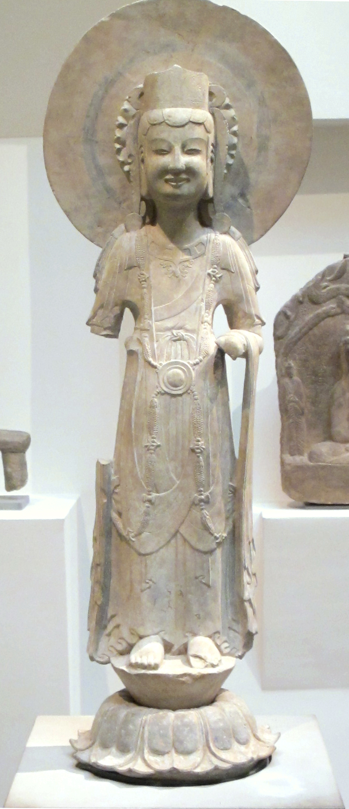

第 2 章
响堂山的碎片
巴黎吉美博物馆的二楼，中国佛教艺术展厅。一尊石雕佛首陈列在靠窗的独立展柜里，展柜的位置经过精心安排——观众从楼梯转角上来，第一眼看见的是它的侧面：微垂的眼睑，饱满的唇线，北齐造像特有的那种介于微笑与冥想之间的神情。射灯从上方斜斜打下来，石灰岩的颗粒结构在强光下呈现出一种接近皮肤质感的半透明效果。标签用英法双语写着简短的信息：“佛首。石灰岩。北齐（550-577）。响堂山风格。河北。”
没有名字，没有窟号，没有原位记录。颈部的断口被处理得很平整。那不是盗凿时留下的原始断裂面。在进入收藏序列之前，有人用工具修整过这道伤口，让它能够稳妥地安放在展台的基座上。断口处的石灰岩呈现出比面部更浅的灰色，颗粒结构暴露在外，像是一棵树被锯断后露出的年轮。如果凑近看，还能辨认出凿具逐层推进的痕迹：先是粗凿打开断面，再换细凿修边，最后用砂石打磨出一个相对规整的平面。
这道工序本身就是一个微型的叙事：它说明这尊佛首在离开石窟之后、进入博物馆之前，曾经在某间作坊或库房里被人重新处理过，以适应新的展示方式。它不再是一尊需要仰望的佛像，而是一件需要平视的展品。
从说，这道修整过的断面正是响堂山碎片流散史最精确的隐喻。龙门石窟《帝后礼佛图》的盗凿，至少还保留了一种画面内部的完整性——那两幅浮雕虽然离开了壁面，但人物队列的方向、比例、前后关系都还在，观者仍然可以辨认出那是一支正在行进的礼佛队伍。
响堂山则不同。这里的造像被分解为佛首、躯干、背光、基座、供养人浮雕、窟门力士等独立部件，每一件都通过不同的渠道、在不同的时间节点、以不同的价格流向不同的目的地。这不是一次性的切割，而是持续多年的系统性拆解。同一座窟里的造像，佛首去了巴黎，躯干留在原地但面部全非，两侧的胁侍菩萨被分别卖给了柏林和东京的藏家，而窟门外的力士残件则辗转进入了纽约的私人收藏。要理解这种碎裂是如何发生的，需要先回到响堂山本身。
响堂山石窟群位于今天河北省邯郸市峰峰矿区的鼓山山麓，分南响堂、北响堂两处，相距约十五公里。北齐天保年间，文宣帝高洋下令在此开窟造像，作为皇家功德。
此后武成帝高湛、后主高纬续有增修，至北齐灭亡前，响堂山已成为邺城附近规模最大的佛教石窟群之一。北齐的造像艺术在这里达到了一个独特的平衡点：它承接了北魏后期的秀骨清像传统，但消解了那种过分拉长的躯体比例和程式化的衣纹处理，转而追求更为饱满的体量感和更为内省的面部神情。
佛像的双肩变宽，胸廓变厚，面庞趋于圆润，眼睑低垂的角度恰好介于凝视与冥想之间。这种风格后来被学者命名为“北齐样式”，它的简洁和克制与同时期南朝造像的繁复形成了鲜明对照。
然而进入二十世纪之前，响堂山已经经历了漫长的衰败期。北齐灭亡后，政治中心从邺城南移，石窟失去了皇家供养。唐宋时期虽有地方官员和僧侣进行过小规模修缮，但整体格局已无法恢复。金元之际，鼓山一带屡经兵燹，寺院建筑大多焚毁，只剩下崖壁上的窟龛裸露在外。
到清末，南响堂山下还有几间残破的僧房，住着两三个无力维护石窟的僧人。他们收取附近村民微薄的香火钱，偶尔为石窟清扫积尘，但无力阻止雨水渗入裂隙、风化侵蚀壁面，也无力阻止从更早时候就开始的零星盗窃——地方志中记载，同治年间已有外人来此“取佛头”，但规模不大，手段粗陋。
真正的转折发生在铁路开通之后。1906年，京汉铁路全线通车，从北京到汉口的旅程从数十天缩短为三十多个小时。铁路经过邯郸，在峰峰矿区附近设有站点。这条铁路不仅带来了煤炭开采的资本和机器，也带来了古董商、传教士、探险家和外国学者。石窟从此不再是一个需要专程跋涉才能抵达的偏僻山沟，而是一个可以从北京乘火车南下、再换骡车走半天就能到达的目的地。交通的便利彻底改变了响堂山在文物市场中的位置：它从“偏远难至”变成了“可达”，从“可达”变成了“值得专程前往”。第一个对响堂山进行系统调查的，是日本学者常盘大定。
1920年至1924年间，他曾三次考察响堂山，同行者有关野贞等建筑史和美术史学者。他们携带了当时最先进的摄影器材，对南北响堂的主要窟龛进行了测绘和拍摄。这些照片后来发表在《支那佛教史迹》等大型图录中，成为记录响堂山完整状态的最早一批影像资料。常盘大定在笔记中详细描述了各窟的造像配置：南响堂第7窟窟门两侧各有一尊力士像，高约两米，肌肉隆起，怒目圆睁，足踏山石；北响堂第3窟外壁布满浮雕小龛，龛内各有一佛二菩萨，构图完整；第4窟主尊坐佛高逾五米，背光浮雕飞天伎乐，窟顶有莲花藻井。
这些记录在今天看来具有双重意义。一方面，它们为响堂山石窟留下了珍贵的档案——窟龛编号、造像位置、保存状况、风格判断，构成了一个相对完整的原境描述体系。另一方面，它们也为后来的盗凿者提供了精确的定位。常盘大定的图录出版后，响堂山造像的照片和位置信息开始在国际古董市场上流通。
买家可以根据图录指定“第几窟某位置的菩萨头部”或“刻经洞外壁第三龛的供养人浮雕”，而盗凿者只需要按图索骥。学者无意中绘制了一张寻宝图。
盗凿的高峰期出现在1920年代至1930年代。这一时期，中国北方正处于军阀混战与政权更迭的间隙之中，地方治理几乎真空，石窟无人看守。南响堂山下的僧人早已离散，最后一位老僧在1918年冬天圆寂后，僧房便空了。石窟成了真正的无主之地。盗凿者通常在夜间作业，携带钢锯、铁锤、凿子和绳索，攀上崖壁，选定目标后开始切割。大像的佛首是最受市场欢迎的品类——它们体积适中，便于装箱运输，面容特征鲜明，容易断代和标价。一尊北齐风格的佛首在北平的古董店里可以卖到几百银元，运到上海或天津的租界后价格翻倍，到了巴黎或纽约的拍卖行则再翻数倍。
切割的手法因造像体量而异。小型龛像——高约三四十厘米的菩萨或供养人浮雕——往往被整块撬走。盗凿者用钢凿沿龛的边缘打入，利用石灰岩的层理将整块浮雕从壁面上剥离。
这种手法留下的痕迹最为触目：壁面上会出现一个与浮雕轮廓完全吻合的凹槽，边缘参差，内部暴露出新鲜的岩面。中型造像——高一米左右的弟子或胁侍菩萨——通常被截取上半身。盗凿者从腰部或胸部下锯，将整个上身连同头部一并取走，留下下半身仍然固定在原位。大型造像——主尊或窟门力士——则只能斩首。因为身躯过于庞大，无法整体搬运，盗凿者便只取佛首，从颈部最细处下凿，敲断后装入麻袋运走。
颈部的断口因此成了一种特殊的证据。不同的盗凿工具和手法会在断口上留下不同的痕迹。使用钢锯切割的断口相对平整，边缘有锯齿纹；使用铁锤和凿子的断口则呈阶梯状，每一层都对应一次敲击的力度和角度；如果盗凿者急于脱身、在最后阶段暴力敲击，断口就会出现不规则的崩裂，碎片四溅。这些痕迹在今天仍然可以在石窟现场观察到，也可以通过博物馆藏品的颈部断口进行比对。理论上，如果两件碎片的断口能够完全吻合，就可以证明它们来自同一尊造像。
但在实践中，这种比对几乎无法进行——因为散布在各国的响堂山碎片大多经过了后期修整，原始的断裂面被磨平、填补或重新切割，以适应展台或支架。盗凿者留下的痕迹被新的痕迹覆盖了，拼接的可能性随之消失。
佛首离开石窟之后的第一站，通常是北平或天津的古董店。1920年代的北平琉璃厂，已经有专门经营佛教造像的店铺。店主们与各地的盗凿者保持着松散的供货关系，有时通过中间人交易，有时直接派人到产地收购。佛首被运到店里后，会先经过清洗和初步修复——断裂面被磨平，残缺的耳垂或发髻用石膏补全，表面的污垢用酸性溶液清除。经过这番处理，一尊从崖壁上暴力斩下的佛首就可以呈现出“艺术品”的样貌，摆放在博古架上等待买主。
买主大致分为三类。第一类是欧美博物馆的代理人和策展人。他们通常通过驻华机构或洋行与古董商建立联系，定期获取货单和照片，从中挑选符合收藏方向的藏品。第二类是私人收藏家，他们或亲自来华寻访，或委托在华代理人代为收购。
第三类是日本古董商和学者，他们在中国拥有独立的信息网络，往往能比欧美买家更早接触到新出土或新盗凿的文物。三类买家之间既有竞争，也有合作——有时一方资金不足，会转介给另一方；有时几方联手压价，共同对付古董商。
在这个网络中，卢芹斋是一个无法绕开的名字。他的来远公司在巴黎和纽约都设有分号，专门经营中国文物。响堂山的造像碎片是他经手的重要品类之一。现存的货单和通信显示，1920年代至1930年代，卢芹斋曾多次向欧美博物馆出售标为“北齐响堂山风格”的佛首、菩萨头和浮雕残件。这些货单上的描述往往十分简略：“石雕佛首，北齐，响堂山，高45厘米”、“菩萨躯干，石灰岩，响堂山风格”。没有窟号，没有原位照片，没有出土地点记录。对于买家而言，这些信息已经足够——他们需要的是一尊可以代表北齐风格的雕塑，而不是一尊必须在特定石窟语境中才能被理解的佛像。山中商会则代表了另一种运作模式。
这家日本古董商在北平、纽约、波士顿、伦敦都设有分支，其经营规模远超卢芹斋。山中商会的做法是成批收购、成批运输、成批展览和拍卖。1920年代，他们从华北各地收购了大量石窟造像碎片，其中有不少来自响堂山。这些碎片被集中运到纽约或波士顿的展厅，以“中国佛教艺术专场”的名义进行拍卖。拍卖图录上的照片经过精心拍摄和排版，佛首被放置在深色背景前，光线从侧面打来，强化面部轮廓和石质纹理。它们看起来不像宗教圣物，更像是现代雕塑。
日本学者自己的探险队也在同时期活动于响堂山一带。大谷光瑞探险队在1910年代曾两次考察响堂山，拍摄照片并收集了一些小型造像残件。这些残件后来随大谷收集品一起流散，一部分进入东京国立博物馆，一部分通过朝鲜半岛辗转进入旅顺博物馆，还有一些至今下落不明。而德国探险队的勒柯克——以切割柏孜克里克壁画闻名——虽然没有直接参与响堂山的盗凿，但他所代表的那种“为保存而切割”的理念，在当时的学术界和收藏界产生了广泛影响。
这种理念的逻辑是：如果文物留在原境将不可避免地毁于战乱、盗凿或自然风化，那么将它切割下来运往博物馆，就是一种保护。这个逻辑在技术层面有其合理性，但它回避了一个根本问题：切割本身就是一种不可逆的破坏，而被“保护”下来的碎片，在失去原境之后，还能在多大程度上保持其原有的意义。
响堂山的碎片正是按照这个逻辑被分散到世界各地的。北响堂第3窟的一尊菩萨立像，头部被斩下后经卢芹斋之手流入巴黎吉美博物馆，身躯部分则留在原窟，颈部以上空无一物。同一窟外壁的一组供养人浮雕，被分成三块分别出售：一块去了柏林东亚艺术博物馆，一块进入伦敦大英博物馆，第三块被一位日本私人藏家购得，至今未公开。南响堂第7窟窟门东侧的力士像，头部被山中商会购得后转售给纽约大都会艺术博物馆，身躯残件则被一位比利时古董商买走，后来捐赠给了布鲁塞尔皇家艺术与历史博物馆。这些碎片在各自的博物馆里被赋予了新的编号、新的标签、新的展陈位置。
它们不再属于响堂山，而是属于“亚洲艺术”或“佛教雕塑”的收藏序列。博物馆的展陈方式进一步强化了这种再语境化。在吉美博物馆，响堂山的佛首被放置在“中国佛教艺术”展厅，与北魏、唐代的佛首并排陈列，构成一条风格演变的线性叙事。观众看到的是从北魏到唐代的“佛首进化史”——秀骨清像逐渐变为丰腴饱满，微笑从神秘转向世俗。响堂山的北齐佛首恰好处于这个序列的中间位置，被用来证明从魏到唐的过渡。
但在这个叙事中，响堂山本身被抹去了。观众不会知道这尊佛首来自哪个窟、原位在哪里、与哪些造像构成组合、在当时的宗教仪轨中扮演什么角色。他们看到的只是一件“北齐风格”的标本，它的价值在于填补风格史链条上的一个环节。
大英博物馆的展陈则采取了另一种策略。他们将响堂山的供养人浮雕残件与来自其他石窟的浮雕并置在同一面展墙上，按照年代顺序排列。这种并置创造出了原本不存在的视觉关系——龙门、响堂山、天龙山的碎片被放在一起，形成了一条“中国石窟浮雕”的完整谱系。
但在原境中，这些浮雕分属不同的石窟、不同的寺院、不同的供养群体，彼此之间没有任何关联。博物馆的并置是一种学术建构，它为碎片赋予了新的秩序，但这个秩序是博物馆的秩序，不是石窟的秩序。
纽约大都会艺术博物馆的做法更为激进。他们将响堂山力士头部与一尊来自天龙山的唐代力士身躯组合在一起，构成了一件完整的力士像。标签上注明“头部：北齐，响堂山；身躯：唐代，天龙山”。
这种拼配在技术上无可挑剔——两个碎片的比例、材质和风格经过策展人的精心挑选，组合后的视觉效果相当协调。
但从文物本体的角度看，这是一次彻底的再创造：两件来自不同时代、不同地域、不同石窟的碎片被强行拼合，形成了一个历史上从未存在过的造像。
观众看到的不是响堂山或天龙山的力士，而是博物馆制造的“中国力士”。这些案例揭示了碎片化流散的一个深层后果：文物不仅失去了原境，还被迫进入了新的组合与叙事。
这些新组合在学术上有其价值——它们为跨地域、跨时代的风格比较提供了便利，也为博物馆教育创造了直观的视觉材料。但它们同时也构成了一种新的权力关系：博物馆掌握了命名、断代、分类和展陈的权力，而原境——那个崖壁上的石窟、那个香烟缭绕的礼拜空间、那个僧侣和信众日常经过的窟门——被彻底排除在叙事之外。碎片在博物馆里获得了新的身份，但这个身份是博物馆赋予的，不是它自身携带的。
回到响堂山现场。今天的南响堂第7窟窟门东侧，力士像的位置只剩下一个不规则的凹槽。凹槽的轮廓与力士的足部和腿部大致吻合，边缘的凿痕清晰可见。凹槽内部，石灰岩表面呈现出比周围壁面更浅的颜色，那是岩石被暴露在空气中不过一个世纪的新鲜面。
在凹槽上方，门楣的浮雕仍然完好——飞天和卷草纹沿着拱门边缘延展，线条流畅，保存状态出奇地好。盗凿者显然对门楣浮雕不感兴趣，因为它们的市场价值远不如独立的造像。于是，门楣留下来了，力士走了。
石窟的视觉逻辑被打破：门楣的装饰仍然在，但被装饰的门已经失去了守护者。
北响堂第3窟的情况更加惨烈。洞窟外壁原本布满浮雕小龛，每龛内有一佛二菩萨或一佛二弟子，龛楣刻有供养人姓名和发愿文。常盘大定1922年拍摄的照片显示，当时外壁的大部分龛像还在原位，虽然风化严重，但整体格局完整。
到了1930年代，这些龛像被逐一撬走，壁面上留下密密麻麻的空龛，像是一面被掏空的蜂巢。空龛的边缘参差不齐，有的地方整块壁面剥落，暴露出内部的碎石和泥土。
发愿文被凿断了，供养人的名字只剩下一半——“张”字还在，“某”字被凿去；“为亡母”三字可辨，“敬造”二字只剩偏旁。这些残破的文字失去了所指的对象——它们为之祈福的造像已经不在了。
刻经洞的内部，主尊坐佛的头部同样被斩去。断口的位置在颈部最细处，凿击从右侧开始，向左推进，在左侧收凿时用力过猛，导致左肩部分崩裂。崩裂的碎片散落在台座上，有些已经被后来的访客捡走，有些仍然留在原处，碎石之间长出了青苔。
佛身仍然端坐在莲花座上，结跏趺坐，双手结说法印，袈裟的衣纹从肩部垂落，覆盖双膝，线条简洁有力。没有头部的佛身反而呈现出一种奇异的完整性——躯体的比例、衣纹的走向、手印的姿势，所有这些都还在，只是最顶端的部分被截去了。阳光从窟门射进来，照在断口上，断口的阴影投射在身后的背光浮雕上，形成一个不规则的黑色轮廓。
窟外的崖壁上，刻经的文字还在。北齐天统四年镌刻的《维摩诘经》全文，占据了窟门上方和两侧的大片壁面。字体是典型的北齐隶楷，结体方正，笔画厚重。经文的内容是维摩诘居士与文殊菩萨的辩论，讨论“不二法门”的真谛。
经文中有一段话，在空无一物的窟门前读来别有意味：“若菩萨行于非道，是为通达佛道。”这些文字没有受到盗凿的破坏——刻经本身没有市场价值，它不能装箱运走，不能摆在展柜里，不能标价出售。
于是，文字留下了，佛像走了。经文仍然在讲述佛理，但听法的佛已经不在了。响堂山碎片的全球分布，至今没有一个完整的统计。
勒柯克在1904年至1914年间四次率队深入新疆，从柏孜克里克千佛洞、克孜尔石窟等地切割了大量壁画。他的操作手法与响堂山的盗凿者在技术上同源——都是用锯和凿将图像从壁面上剥离，然后装箱运往柏林。但勒柯克为自己的行为提供了一套完整的辩护逻辑：这些壁画留在原地将被当地居民破坏、被风沙侵蚀、被异教徒损毁，运到柏林则是进入了“安全的博物馆”，可以被妥善保存并供学者研究。
这套逻辑在当时的欧洲学术界并非孤例。斯坦因从敦煌带走经卷、伯希和从莫高窟挑选绢画时，都使用了类似的论证——他们不是在掠夺，而是在“抢救”。
响堂山的碎片流散虽然发生在不同的地理空间和制度框架下，但背后的理念却与勒柯克一脉相承。古董商和收藏家未必读过勒柯克的著作，但他们共享了一个未经言明的前提：中国的原境是不可靠的，博物馆才是文物最终的归宿。这个前提在二十世纪上半叶被反复实践，最终导致了从新疆到河北、从壁画到石雕的系统性切割与搬运。
然而，勒柯克声称的“保护”效果在历史检验中显得可疑。柏孜克里克千佛洞在壁画被切割运走后，仍然面临严重的自然和人为破坏。据记录，该遗址承受着坍塌、风蚀、裂隙、溶盐、空鼓、起甲等多种病害，例如第35窟地仗空鼓面积达壁画面积的六成左右，第16窟壁画起甲面积近24平方米，伴有整体脱落。直到1982年，柏孜克里克千佛洞才被列为第二批全国重点文物保护单位；2010年代，经过两期抢险加固工程，采用锚杆锚固、土坯砌补等措施，才部分缓解了风险。这凸显了原境破坏的不可逆性：切割并不能确保文物的长期安全，反而切断了其与原始环境的联系。
山中商会的运作将这种理念转化为高效的商业流程。他们在北平设有专门的库房，雇用了精通石雕修复的中国匠人，对收购来的碎片进行标准化处理：断口磨平、表面清洗、残缺补全。经过处理的碎片被分类编号，装入定制木箱，先由铁路运至天津港，再装船发往纽约或伦敦。
山中商会纽约分号定期举办“中国石雕展销会”，向博物馆和私人藏家发送印刷精美的图录。
这些图录中的响堂山造像被重新命名——不再叫“某窟某位置的菩萨”，而是叫“北齐石灰岩菩萨头像”或“中国早期佛教雕塑躯干残件”。产地信息被压缩为一个形容词：“响堂山风格”。这个措辞的微妙之处在于，它既提供了断代和地域依据，又回避了任何关于出土地点和获取方式的追问。
“风格”是一个学术概念，它把一件从崖壁上暴力斩下的文物转化为一个可以合法交易的艺术品类。买家购买的是一件“北齐风格”的作品，而不是一件从河北某石窟盗凿的赃物。语义的转换遮蔽了物的来路。
柏林东亚艺术博物馆的入藏记录则揭示了另一种获取路径。1920年代，德国驻华外交官和商人构成了一个独立于卢芹斋和山中商会之外的收集网络。他们利用外交豁免权和通商口岸的治外法权，将文物以“个人行李”或“外交物品”的名义运出中国。
柏林所藏的那件响堂山菩萨头部，入藏记录显示为“1928年购自北平，捐赠人：驻华领事馆职员”。记录中没有提及价格，没有提及出售方，也没有提及出口许可。
这种信息空白并非偶然的疏漏，而是整个文物交易体系中刻意维持的常态——经手人知道这些碎片的来源有问题，因此在文件上尽量少留痕迹。痕迹越少，日后追索的难度就越大。
今天的研究者试图重建响堂山碎片的流散路径时，面对的就是这样一份被刻意简化的档案：只有入藏日期、捐赠人或购买方、简略的品名描述，偶尔附有一张黑白照片。窟号、原位、盗凿时间、经手人链条——这些关键信息几乎全部缺失。碎片一旦离开石窟，就进入了一个信息黑洞。
根据现有的博物馆公开目录和学术出版物，可以大致勾勒出一幅分布图。
巴黎吉美博物馆藏有至少六件标为“响堂山”的佛首和菩萨残件，其中三件来自卢芹斋的旧藏。纽约大都会艺术博物馆藏有响堂山力士头部一件、菩萨躯干两件、供养人浮雕残件一件，主要来自山中商会的渠道。伦敦大英博物馆藏有响堂山浮雕残件两件，入藏记录显示为1930年代购自北平古董商。柏林东亚艺术博物馆藏有响堂山菩萨头部一件、小型龛像一件，入藏时间在1920年代。东京国立博物馆藏有响堂山造像残件若干，部分来自大谷收集品。


此外，费城、波士顿、芝加哥、堪萨斯城、多伦多、斯德哥尔摩、苏黎世等地的博物馆和私人收藏中，也有零星的响堂山碎片记录。总数大约在四十至五十件之间。
但这些数字只是冰山一角。更多的碎片可能存放在私人藏家的库房里，从未公开；可能在历次拍卖中易手，记录散佚；可能在运输途中损毁，被丢弃；可能在盗凿时就已碎裂，残片散落在石窟附近的泥土中，被雨水冲走。
响堂山的碎裂是一个仍在进行的过程——即使盗凿已经停止，风化仍在继续，岩壁仍在剥落，那些留在原位的残躯和空龛仍然在缓慢地变形。
清单是冷峻的。它不抒情，不控诉，不提出解决方案。它只是把事实排列出来，让数字和地点自己说话。
但清单本身也是一种叙事：它让读者看到，同一座石窟的造像如何被分散到不同的大陆、不同的城市、不同的博物馆，彼此之间隔着海洋和国境，隔着时区和语言，隔着完全不同的展陈逻辑和学术分类。它们曾经共同构成一个完整的宗教空间——佛在中央，菩萨在两侧，弟子在龛内，力士在门外，供养人的名字刻在龛楣上，经文刻在壁面上，香火在窟前燃烧，诵经声在崖壁间回荡。现在，佛首在巴黎的射灯下，菩萨在柏林的库房里，力士在纽约的展墙上，供养人在伦敦的抽屉里，经文还留在响堂山的崖壁上，被风吹日晒。
窟里的断口还在。每年春天，融雪渗入裂隙，在断口表面结成薄冰。冰融化后，水沿着凿痕向下流淌，带走微量的石灰岩颗粒。这个过程非常缓慢，但从未停止。一个世纪之后，断口的边缘比最初盗凿时后退了大约两毫米。这两毫米，就是时间在石头上留下的尺度。